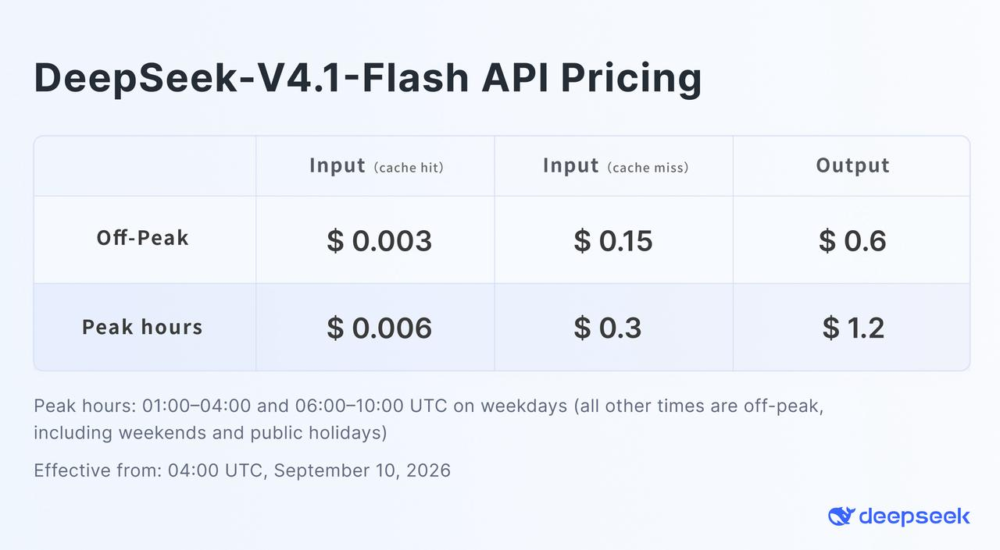

一、导语
9 月 10 日，DeepSeek 把 V4.1-Flash 的权重放上 Hugging Face：MIT 许可、552B 参数的 MoE 模型，只在输入侧激活 8B、输出侧激活 16B。真正让开发者坐不住的是另外两个数字——全局 KV cache 从 DeepSeek-V1 的 389,120 字节/Token 压到 890 字节/Token，缩小 437 倍；缓存命中的输入价格降到 $0.003/百万 Token。而北京时间 9 月 14 日 12:00 起，所有发往 deepseek-v4-pro 的请求被静默改道到 V4.1-Flash、按 Flash 价计费。DeepSeek 用一次强制路由，替自己的旗舰按下了退场键。
二、背景分析：智能体的账单，一半印在缓存上
要理解这次发布的分量，得先看 DeepSeek 的 V4 家底：V4-Pro 是 1.6T 总参数、49B 激活的旗舰，V4-Flash 是 284B 总参数、13B 激活的走量款，两者都支持 100 万 Token 上下文。V4.1-Flash 的 552B 主干几乎是 V4-Flash 的两倍，却仍然只激活 8B/16B——参数变大、算力消耗不变，这是「非对称架构」的字面意思。
前置条件是行业成本的迁移。当模型从「聊天」走向「智能体」，一次任务的成本结构已经变了：请求里塞进几万到几十万 Token 的代码库、日志与工具返回，缓存命中往往占了账单的大头，长上下文的内存占用则决定吞吐和并发上限。DeepSeek 官方说得很直白：缓存命中费用常占智能体成本的一大部分，压缩缓存就是直接砍成本。V4.1-Flash 不是一次单纯的「加参数」，而是一次对长上下文经济性的重新定价。
三、核心内容：把 KV cache 砍到 890 字节
1. 架构：8B 读、16B 写，读得便宜、写得贵
V4.1-Flash 采用新的 Causal Encoder-Decoder（因果编码器—解码器）架构：读 Prefill 只激活 8B 参数，写 Decode 激活 16B。稀疏层里每层配 1 个共享专家加 384 个路由专家，每个 Token 只走 6 个路由专家；另加 196B 参数的 Engram 条件记忆（按 Token 查表稀疏访问）、Single-Pass mHC 残差混合与 DSpark 投机解码。推理侧还给了 reasoning_effort 整数 1–100 的连续档位，让用户自己拿成本换准确率。
2. KV cache：一代缩 3.9 倍，四代缩 437 倍
官方给出的代际曲线很直观：DeepSeek-V1（2023.11）389,120 字节/Token → V3.2（2025.12）48,068（小 8.1 倍）→ V4-Flash（2026.04）3,514（小 13.7 倍）→ V4.1-Flash（2026.09）890 字节（小 3.9 倍）。相比上一代 V4-Flash，HBM 需求降到 1/4、SSD 存储降到 1/8。实现手段是把主 KV 缓存做成 FP4（E2M1 格式，每 16 个通道配一个 E4M3 缩放因子）。对要跑 2000 张 GPU 加存储集群的部署方来说，这四个数字比任何榜单名次都值钱。
3. 价格：缓存命中 $0.003，且高峰时段半价
新价格 2026 年 9 月 10 日 04:00 UTC 生效，继续走峰谷两档：非高峰时缓存命中输入 $0.003、未命中输入 $0.15、输出 $0.6（每百万 Token）；高峰时段翻倍为 $0.006 / $0.3 / $1.2。高峰定义为工作日 01:00–04:00 与 06:00–10:00 UTC，其余时间（含周末与公共假日）均为非高峰，价格直接砍半。

4. 时间线：周一中午，旗舰被强制改名
发布公告里最不寻常的一条是退役安排：V4-Flash 与 V4-Flash-Vision-Exp 已经退休，旧模型名暂时兼容转发到 V4.1-Flash；而北京时间 9 月 14 日 12:00 起，直到 V4.1-Pro 发布为止，所有 deepseek-v4-pro 请求都会路由到 V4.1-Flash 并按 Flash 价格计费。官方给出的理由是对比测试后「V4.1-Flash 在性能、成本、速度和总时长上全面超越 V4-Pro」。至于 V4.1-Pro 何时到，公告没给日期。首批适配方是 WorkBuddy（含 CodeBuddy）与 OpenCode。
5. 跑分：编码与智能体领先，硬推理仍有落差
官方自评里，GPQA Diamond 90.9、HLE 36.8、Codeforces 评分 3471、Terminal-Bench 2.1 90.6。官方发布的智能体对比图上，V4.1-Flash 在 DeepSWE v1.1 拿 74.2（Opus5 74.0、GPT5.6-Sol 73.0）、CyberGym 88.1、Automation-Bench 54.8 均居首；唯独 Terminal-Bench 3.0 只有 30.0，落后 Opus5 的 43.3 与 GPT5.6-Sol 的 34.4。
四、各方反应：便宜是真的，代价也是真的
第三方评测给出了目前最完整的一张成绩单。Artificial Analysis 的综合 Intelligence Index 给它 40 分，排在 113 款模型的第 6 位，明确「超过 GPT-5.6 Luna」；在偏行政事务的 AutomationBench-AA 上拿到榜首，超过 GPT-6 Astra；输出速度 198 Token/秒（第 5），只有 Gemini 3.8 Flash 与 Muse Spark 1.3 更快；按峰值价折算每任务成本 $0.27。
但同一份评测也点出了短板：V4.1-Flash 完成单个任务的输出 Token 消耗明显高于 V4-Pro 与 Claude Fable 5.1，导致「单价便宜」被「话多」部分吃掉。heise 的评价是「一个弱点是相对较高的 Token 消耗」；Artificial Analysis 还提到它在知识缺口处更容易产生幻觉。TheNextWeb 的怀疑更直接：基准可与 Opus 5 在编码上掰手腕，但硬推理仍落后，而且这些数字都还没有独立复现。
竞争面的摩擦同样出现在这一周。Anthropic 发布报告指控包括 DeepSeek 在内的多家中国公司对 Claude 发起蒸馏攻击，累计发现近 2 亿 次相关交互、涉及五个活动——技术竞争已经外溢成规则与合规之争。生态侧则一片热闹：DeepInfra 挂出 $0.20 输入 / $0.60 输出 / $0.006 缓存的托管价格，Baseten 同步上线；中文开发者社区实测后给出的感受是缓存命中输入降价 7 倍多、输出价格砍掉约三分之二。
「经过大量测试，V4.1-Flash 在性能、成本、速度和总时长上全面超越 V4-Pro，因此我们计划有序退役 V4-Pro。」
五、深度解读：三个趋势，一个提醒
1. 开源模型第一次在「智能体成本曲线」上压过闭源旗舰
过去开源模型的常用打法是「同分更便宜」。V4.1-Flash 换了个位置：它在 AutomationBench-AA 这类自动化任务上直接拿第一，同时把每任务成本压在 $0.27。当企业开始按「每个业务流程多少钱」而不是「每百万 Token 多少钱」做预算，MIT 许可的权重就成了采购谈判里的一张硬牌。
2. 长上下文竞赛的计量单位，从参数换成了 KV cache
437 倍的代际压缩说明一件事：100 万上下文的门槛已经过了，接下来拼的是「跑得起」。HBM 只剩 1/4、SSD 只剩 1/8，意味着同样的机器能塞下更多并发会话——这才是压价的钱从哪来。谁先在缓存上做出结构性节省，谁就掌握降价空间。
3. 强制路由是一次高风险的信任实验
不新增模型名、不涨价，直接把旗舰请求改道到小模型，等于把「迁移决定权」从用户手里收走。省下的是运维复杂度，赌上的是企业客户的确定性需求——直到 V4.1-Pro 出现之前，所有 V4-Pro 用户都只能在 Flash 上跑。
4. 提醒：单价低不等于总账低
输出 Token 消耗偏高，会让「每百万 Token 单价」和「每任务实际花费」出现分叉。对按次计费的智能体产品，部署前应该按自己任务的真实 Token 曲线做一次估算，而不是照搬价格表。
六、总结
DeepSeek 用一台 8B/16B 激活的 552B 模型和 890 字节的 KV cache，把长上下文智能体的成本曲线又往下压了一档，也顺手给「旗舰」这个词重新定了价——真正的分水岭不是它比谁聪明，而是从今天中午起，DeepSeek 最贵的那条产品线不存在了。